Doctoral research
The Correlation of Environmental Parameters with Plant Diversity and Their Biomass in Selected Wetlands of Gujarat
Research connecting environmental parameters, plant diversity and biomass across selected wetlands of Gujarat.
Exploring the living connections between wetlands, forests, communities and climate—and sharing those stories through research, public-interest writing, music and poetry.
Explore research & writingRead my story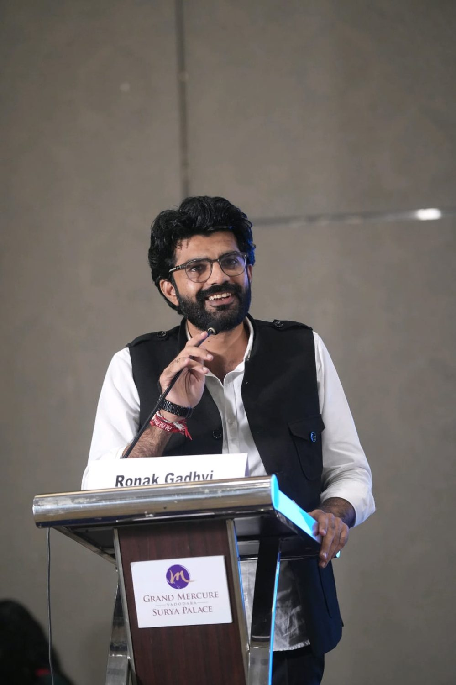
A personal portfolio for work at the intersection of ecological research, restoration practice and environmental communication—with a creative side shaped by music and Hindi poetry.
Dr. Ronak Gadhvi is an environmental researcher and sustainability professional whose work focuses on wetland ecology, biodiversity, forest landscape restoration and climate-resilient ecosystems. His research explores relationships between environmental conditions, plant diversity and biomass, with a strong grounding in Gujarat’s wetlands and landscapes.
Alongside research and project work, he writes about environmental policy, forests, coasts, climate action and sustainable development. Music and poetry offer another way to communicate emotion, place and the natural world.
This website brings those strands together: evidence from the field, ideas for better environmental decisions, and creative work that invites people to connect with nature.
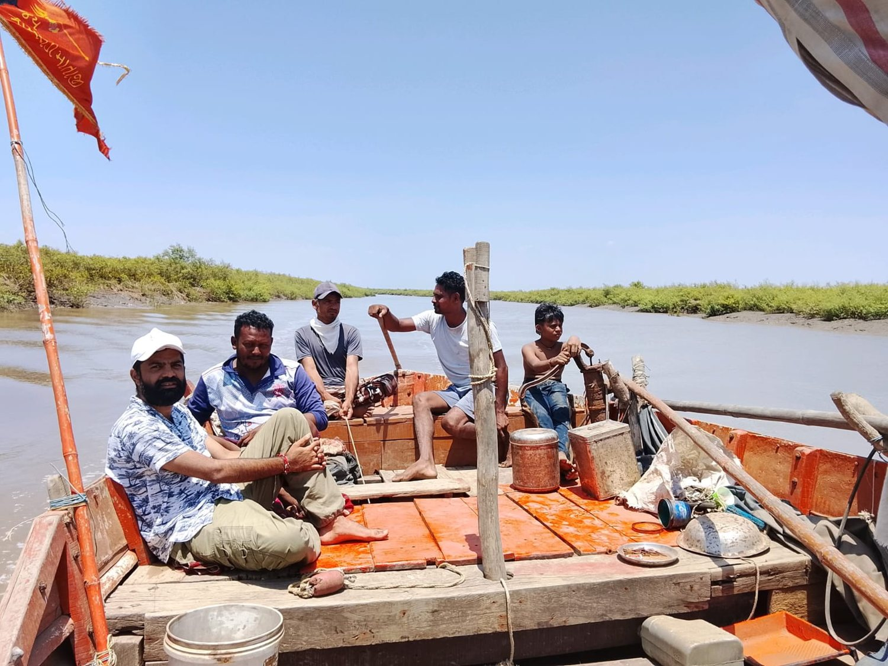
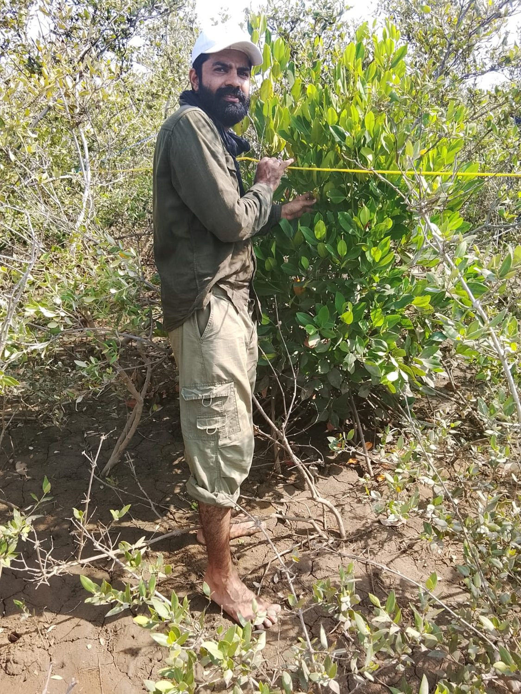
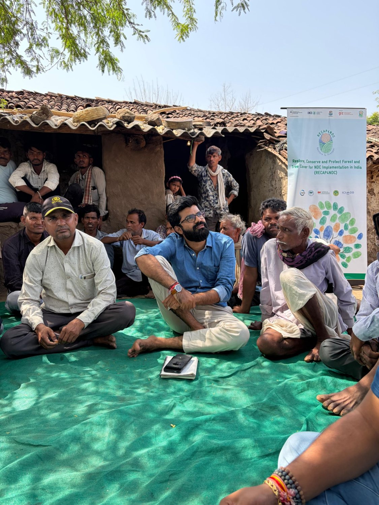
Research on wetland vegetation, aquatic angiosperms, ecological health, biomass and the environmental pressures affecting natural systems.
Research connecting environmental parameters, plant diversity and biomass across selected wetlands of Gujarat.
Aquatic angiosperms, vegetation assessment, ecological indicators, field surveys and biodiversity indices.
Vegetation sampling, biomass estimation, ecological analysis and remote-sensing-informed assessment where supported by each study.
“Biodiversity Assessment of Aquatic Angiosperms in Lehri Sagar Lake: A Key to Ecological Health in Gujarat.”
“Wetlands as Natural Stabilizer and Their Management” — a book chapter on wetland management.
Explore selected publications and research through the linked scholarly profiles.
Environmental essays and policy commentary connecting evidence, governance, livelihoods and the landscapes where people live.
An argument for a coherent state-level policy framework for mangrove conservation and coastal resilience.
Read the article ↗Exploring the policy and livelihood dimensions of forest-based economies and non-timber forest products.
Read the article ↗The complete article archive will be organised by theme and linked to the original publisher. Where an article appears on more than one platform, it will be listed once with additional source links.
Fieldwork, restoration coordination, ecological assessment and engagement with communities and institutions.
Work associated with RECAP4NDC, Gujarat coordination, restoration planning, stakeholder engagement and climate-resilient landscapes.
Wetland biodiversity, mangrove-related work, vegetation monitoring and ecological assessment across Gujarat landscapes.
Project-based research, field data collection, stakeholder consultation and technical reporting.
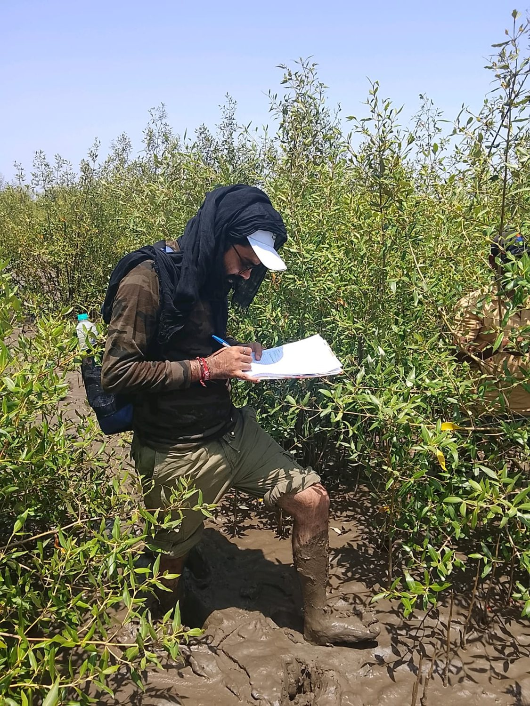
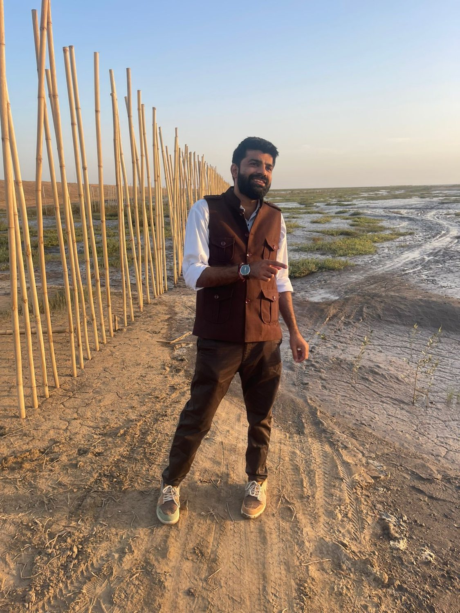
Lectures, media engagement, professional recognition and opportunities to support emerging solutions.
Recognised in the Research Project category at the Gujarat Climate Change Awards 2026–27.
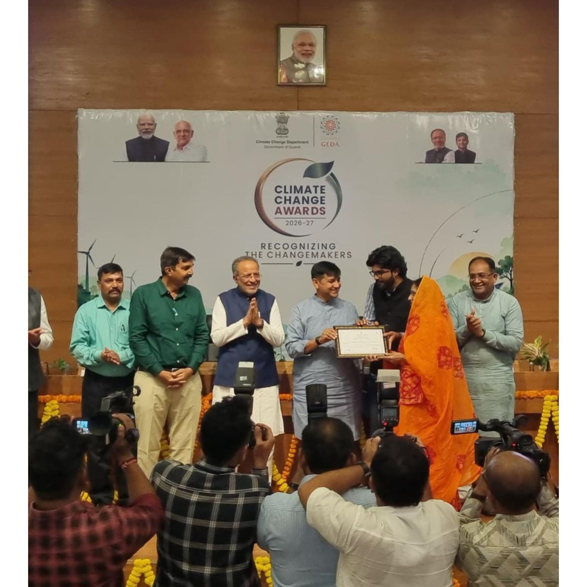
Delivered an online session on 30 April 2026 (16:12–17:00 hrs) for officers from the Government of Gujarat’s Forest & Environment Department and Agriculture, Farmers Welfare and Cooperation Department, as part of GIDM’s training programme on NDC targets and Forest Landscape Restoration.
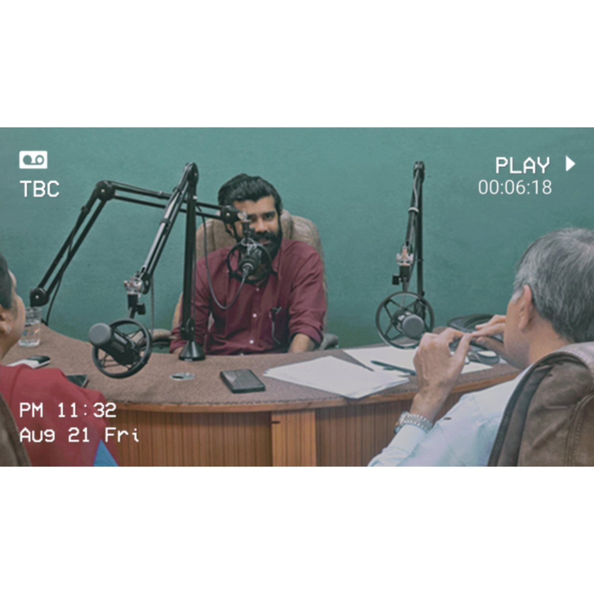
Served as a jury member in the Climate Change category at Yi YUVA Future 6.0, held in Bhavnagar, Gujarat, on 12 September 2026, representing RECAP4NDC and contributing to the evaluation of student-led climate-change solutions.
Delivered a Hindi lecture on SDG 14 and mangrove conservation for the online certificate course “Sustainable Development Goals: The Indian Context (Hindi),” organised by AIPRIS, The Maharaja Sayajirao University of Baroda, on 24 September 2026.
Music and Hindi poetry are a personal creative thread alongside the work in ecology and sustainability.
Nature is not only something to measure or manage; it is also something people experience, remember and express. This section will bring together selected songs, covers, music videos and poetry posts, with original creators and credits clearly identified.
Rather than presenting every recording as an original composition, the final archive will distinguish covers, performances, original writing and collaborative work.
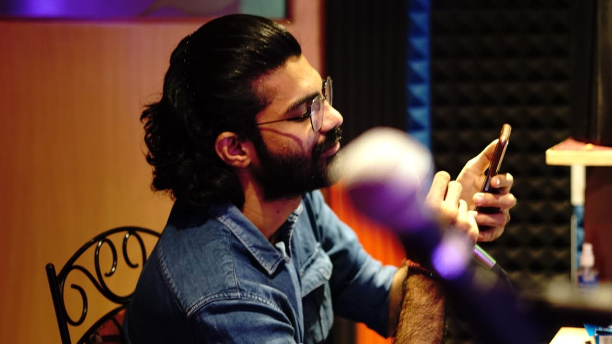
A collection of moments from fieldwork, community engagement, professional events, travel and creative pursuits.
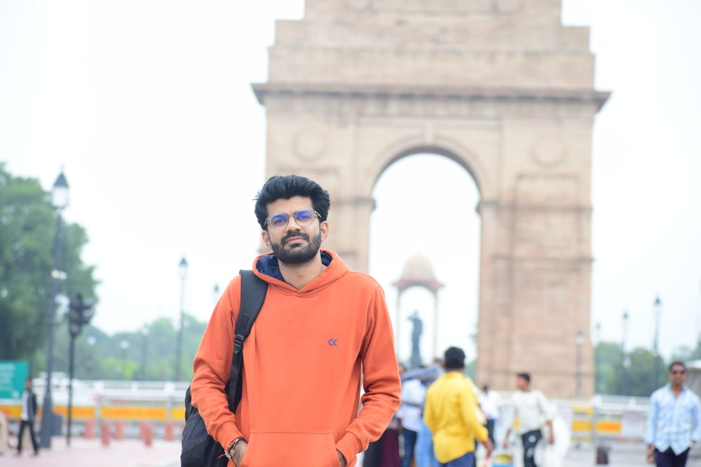
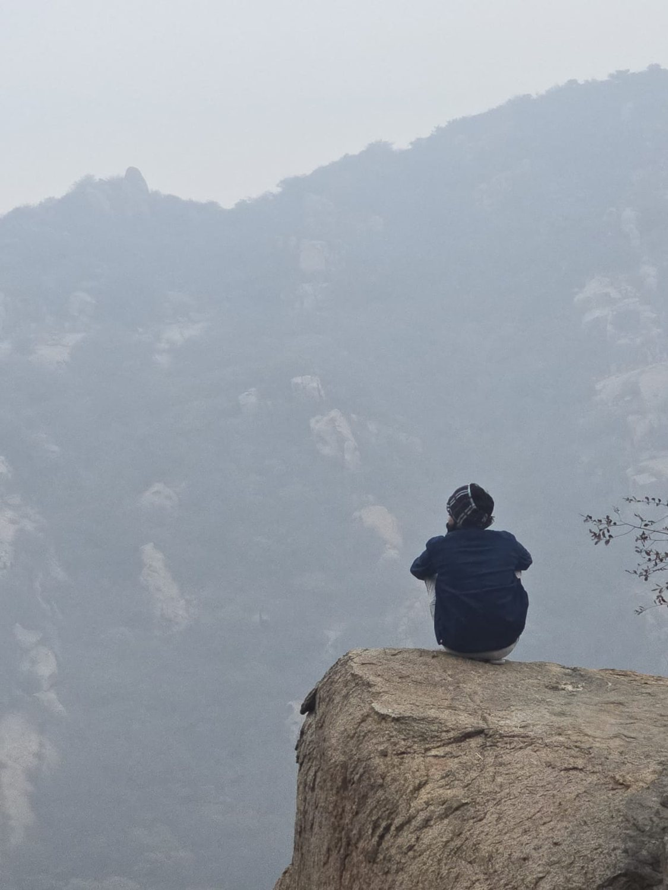
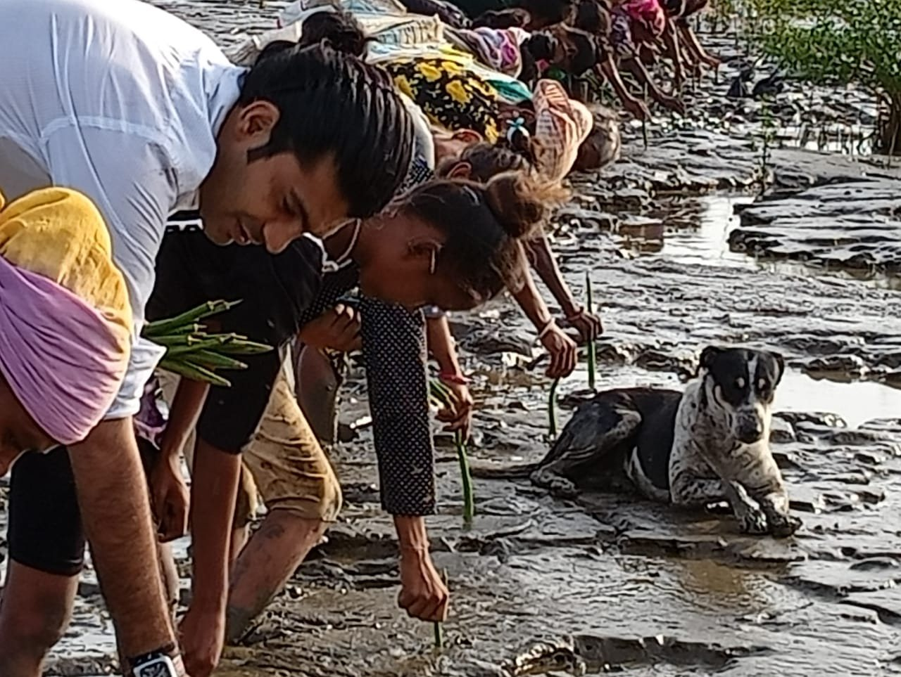
For research collaboration, environmental writing, restoration work, speaking invitations and creative collaborations.
Public professional profiles: